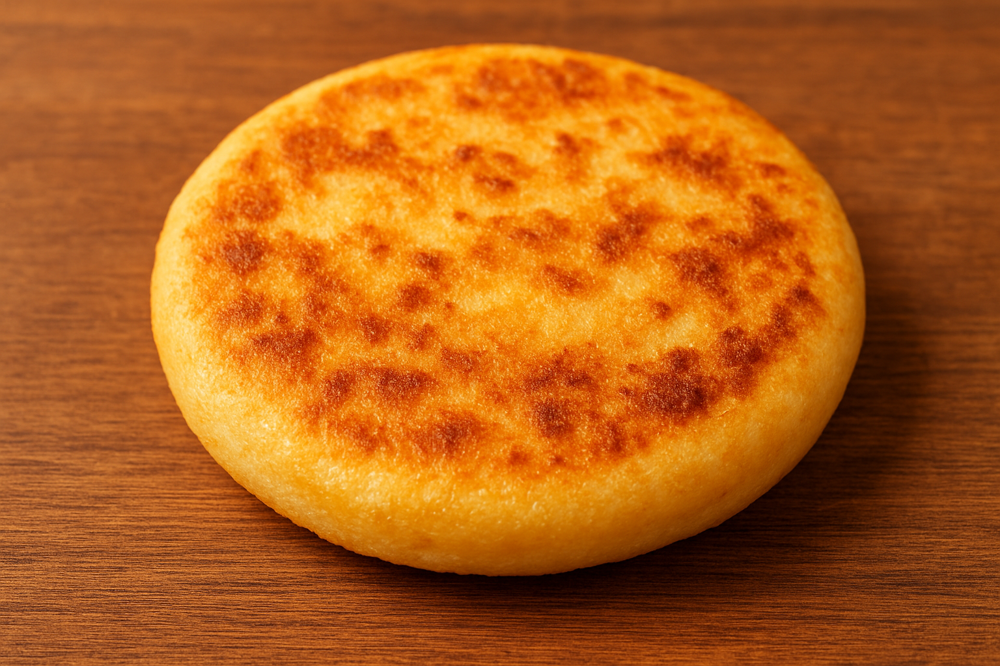

Bienvenidos a Arepas del Sabor, un espacio creado para todos los amantes de la comida auténtica, donde la arepa es la verdadera protagonista.
Nuestra finalidad es rescatar la tradición de este icónico platillo latinoamericano, brindándote opciones deliciosas y variadas que se adaptan a todos los gustos.
En esta web encontrarás información sobre nuestra historia, nuestros productos, videos y podcasts que te acercan más a la cultura de la arepa.
